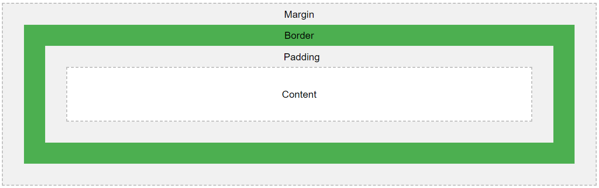

Cascading Style Sheets is used to describe and separate the design, style, and presentation aspects from the structure and organisation of an HTMLweb page. The CSS code can be stored in a separate external file or embedded in the HTMLdocument.
CSS started development in October 1994 by Hakon Wium Lie who was working at European Organisation For Nuclear Research(CERN). Several other proposals for style sheet languages existed during that time including one developed by Bert Bos who is also attributed to be a major contributor for CSS. Lie and Bos then worked together to produce the first official CSS language which was published and finalised in December 1996. Adoption of the CSS language has since progressed through the years to it’s current CSS version 3/4 today. Below is a table which shows the progression of CSS through the years.
CSS Version History Table
| CSS Version Number | Features |
|---|---|
| CSS 1 1996 |
|
| CSS 2 1998 |
|
| CSS 3 1999-Current |
|
| CSS 4 Current |
|
Prior to CSS all style designs were included in the HTML code which can make it bloated and the same style design had to be repeated in HTML. CSS improves flexibility and control of the design and style elements of the webpage by using a separate external style sheet. It enables specified designs and styles to be reused throughout web pages and also changed easily from a single location of code reducing code in the HTML. Changes to the CSS global style sheet can affect multiple HTML web pages globally, reducing complexity and repetition.
By using an external stylesheet this reduces the file size of the HTML document and improves network bandwidth efficiency as the external CSS file is usually stored in the browser cache, which can reduce network packet transfers on multiple HTML files as it reduces the size of HTML web pages being loaded.
With CSS the code for design and style can be separated into an external .CSS file which frees up the HTML file of excessive code and more of pure content and this enables search engines to crawl through the website more easily and promotes the accessibility of the search engine to rank the website which is critical to the success of most websites.
Websites are able to be viewed across a lot of different types of devices and media ranging from desktop computers, laptops, tablets, Ipads, and mobile devices. CSS enables tailoring of the same HTML content to be displayed differently on different devices maximising the presentation of the content on a particular device. For example the content of this web page is also tailored to medium and small devices using : <div class ="col-md-6 col-sm-12"></div>
Several frameworks and libraries of pre-made CSS classes are available which speeds up the process of web development. The most common frameworks include : Bootstrap,Foundation, Blueprint, Cascade Framework, and Materialize. These provide professionally ready made designs and styles that can be incorporated into web pages and if required the developer can over write and modify the standard library styles to make them unique to their web page.
Bootstrap is a free and open source CSS framework, it provides design templates for popular web page elements such as typography, navigation, forms, buttons, and other common features. It consists of CSS code and may also include some javascript to provide extra functionality. The main advantage of Bootstrap is its support for responsive designs that caters to smaller screen devices such as mobile phones and tablets. Its popularity has increased due to this responsive design feature. This web page uses a Bootstrap component called Jumbotron.
The CSS box model describes a model where each HTML element has a rectangular shape and within this shape there are spacing boundaries that can be modified through CSS. Shown in the diagram below from W3C website :
Content : Text and images are in this area.
Padding : Spacing around the content area, default setting is transparent.
Border : The area where a border line can be placed outside the padding.
Margin : Spacing outside of the border area.
The CSS main syntax consists of a property which describes the named feature to be modified and a value of the property by which amount to change it to(Image from Mozilla developer website).

CSS uses selectors to identify what tags and attributes to apply its style designs to. The selector can be applied in several ways as below :
| Selector Description | Selector Syntax |
|---|---|
| Elements of a specific type, for example all h1 headers : | h1 {font-size:150%;} |
Elements of a particular attribute for example :
|
|
| Selector application will also use the DOM and its hierarchical structure to determine how elements are affected by application of design styles. E.g. All children of h1 headers will have purple font color |
h1 {color:purple;} <h1> This is to <em>illustrate</em> inheritance </h1> |
CSS applies the concept of inheritance whereby descendent elements can inherit CSS properties from their ancestors. The XHTML elements on a web page are parsed by the browser forming a document tree data structure which determine the hierarchy of elements on the web page.
CSS uses a priority scheme where CSS statements of higher priority are affected first and if not specified then it flows down the priority list to find statements that identify the CSS style, this process of traversing down the priority list to determine what style affects are enacted is called ‘cascading’. Below is a table which shows how CSS priorities are structured from highest to lowest :
| CSS Priority Level | Description |
|---|---|
| Inline CSS | Highest Priority : Placed within the HTML tag using a style attribute |
| Internal CSS | 2nd Highest Priority : The HTML elements or CSS selectors tags are provided style attributes that are declared in the head section of the HTML file |
| External CSS | Lowest Priority : The element tags and CSS selectors are placed outside the HTML file in a separte CSS styles file which is linked in the HTML document using a link tag. |
CSS uses pseudo classes to detect changes in the state of an element when a user interacts with it for example detect when the user hovers a mouse over an element or clicks on an element.
Example of pseudo class that detects a mouse hover and changes color from green to red.
The most common style attributes are listed below :
| Style Attribute | Style Attribute Syntax |
|---|---|
| Defines background color to green | background-color:green; |
| Defines font size to 16 pixels | font-size:16px; |
| Defines left padding to 50 pixels | padding-left:50px; |
| Aligns text to center | text-align: center; |
| Sets width to 25% and for screens smaller than 601 pixels it resizes to 100% |
width: 25%; |